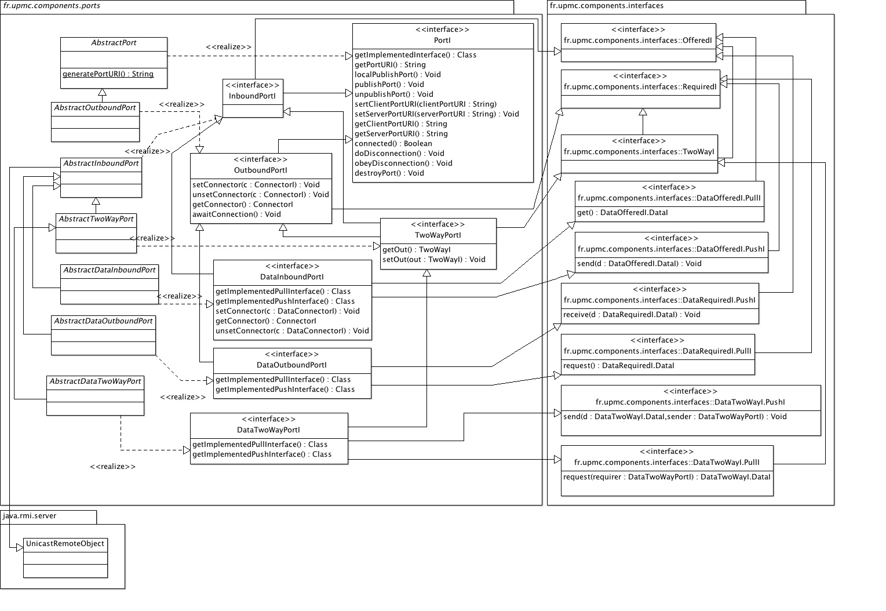

See: Description
| Interface | Description |
|---|---|
| DataInboundPortI |
The interface
DataInboundPortI represents the category of
ports used by components exchanging data rather than being called for
their services. |
| DataOutboundPortI |
The interface
DataOutboundPortI represents the category of
ports used by components exchanging data rather than calling providers for
their services. |
| InboundPortI |
The interface
InboundPortI represents the category of
PortI that cater for incoming calls from client components
towards the service providers. |
| OutboundPortI |
The interface
OutBoundPortI represents the category of
PortI that cater for outgoing calls from a component
towards its service providers. |
| PortI |
The interface
PortI provides for a common supertype for all
ports in the component model. |
| TwoWayPortI<TWI extends TwoWayI> |
The interface
TwoWayPortI represents the category of
PortI that cater for incoming and outgoing calls among
components that act both as clients and service providers towards each
others on the same interface. |
| Class | Description |
|---|---|
| AbstractDataInboundPort |
The class
AbstractDataInboundPort partially implements an
inbound port for data exchanging components. |
| AbstractDataOutboundPort |
The class
AbstractDataOutboundPort partially implements an
outbound port for data exchanging components. |
| AbstractDataTwoWayPort |
The class
AbstractDataTwoWayPort partially implements a data
two-way port for components exchanging data with each others in a
peer-to-peer fashion. |
| AbstractDataTwoWayPort.OutProxy |
The class
OutProxy implements a proxy object that
forwards calls to the connector and to the other component. |
| AbstractInboundPort |
The class
AbstractInboundPort partially implements an inbound
port which implements the offered interface of the provider component so
that the provider can be called through this port. |
| AbstractOutboundPort |
The class
AbstractOutboundPort partially implements an outbound
port which implements the required interface of the owning component so
that it can call its providers through this port. |
| AbstractTwoWayPort<TWI extends TwoWayI> |
The class
AbstractTwoWayPort partially implements a two-way
port for components calling each others in a peer-to-peer fashion. |
| AbstractTwoWayPort.OutProxy<T extends TwoWayI> |
The class
OutProxy implements an object that forwards
calls through a two way interface to the other peer component. |
Hierarchy of ports to expose interfaces of components and interconnect them.
| Licence |
|---|
|
Copyright Jacques Malenfant, Sorbonne Universite. Jacques.Malenfant@lip6.fr This software is a computer program whose purpose is to provide a basic component programming model to program with components distributed applications in the Java programming language. This software is governed by the CeCILL-C license under French law and abiding by the rules of distribution of free software. You can use, modify and/ or redistribute the software under the terms of the CeCILL-C license as circulated by CEA, CNRS and INRIA at the following URL http://www.cecill.info. As a counterpart to the access to the source code and rights to copy, modify and redistribute granted by the license, users are provided only with a limited warranty and the software's author, the holder of the economic rights, and the successive licensors have only limited liability. In this respect, the user's attention is drawn to the risks associated with loading, using, modifying and/or developing or reproducing the software by the user in light of its specific status of free software, that may mean that it is complicated to manipulate, and that also therefore means that it is reserved for developers and experienced professionals having in-depth computer knowledge. Users are therefore encouraged to load and test the software's suitability as regards their requirements in conditions enabling the security of their systems and/or data to be ensured and, more generally, to use and operate it in the same conditions as regards security. The fact that you are presently reading this means that you have had knowledge of the CeCILL-C license and that you accept its terms. |
Ports are the entities that allow components to expose services and call other
components' services. The basic properties of ports are defined by the
interface PortI and implemented by the abstract class
AbstractPort. As such, components offer services as offered
interfaces (interfaces extending OfferedI) and allow other
components to call these services through inbound ports, that are defined
by the interface InboundPortI and implemented by the class
AbstractInboundPort. Symmetrically, components can require other
components services as required interfaces (interfaces extending
RequiredI) and call them through outbound ports, that are defined
by the interface OutboundPortI and implemented by the class
AbstractOutboundPort. Inbound and outbound ports are connected
through connectors (subclasses of AbstractConnector).
An outbound port is an object that typically implements (in the Java sense) the
required interface to allow the internal code of the client component to call
its required methods on that port. The port then calls the connector, which
therefore also implements the required interface. The connector then calls
the inbound port of the server component, which implements the offered interface.
The inbound port is thus responsible for calling the actual service on the
server component. From the implementation point of view, if the server
component is sequential, the inbound port can call the service method using
plain Java method calls. If the server component is concurrent, then the
inbound port will create a service runnable task that will be submitted to
the thread pool of the server component for execution. Hence, when the server
component is sequential (or passive), the service is executed by the thread of
the client component (or the thread that is executing the code in the client
component that made the call). But when the server component is concurrent
(or active), the thread of the client executes everything until the inbound
port, and then a thread of the server component executes the service. However,
when programming the port, there is no need to make a difference as the call
to the owner component should always use the handleRequest
methods which are properlu defined to use a thread or not depending on the
owner to be passive or active.
Ports play a key role in making the components callable even among different
JVM and hosts. Ports therefore have a URI so that they can be published on
registry. When deploying an application within a single JVM, only a local
registry and plain Java method calls are used. When the application is deployed
on multiple JVM and hosts, calls among the JVM are using RMI. In RMI, only
the called methods must be published in the RMI registry. Hence, outbound
ports need just to be published in the local registry (so that the connection
logic in the class ConnectionBuilder can know them), but inbound
ports that are meant to be called across JVM must be published on the RMI
registry. The abstract classes AbstractAssembly and
AbstractDistributedAssembly provide respectively the methods for
publishing ports locally or in the RMI registry. Using RMI is manisfested by
the fact that the interface OfferedI extends the interface
java.rmi.Remote and by the fact that the class
AbstractInboundPort extends the class
java.rmi.server.UnicastRemoteObject.
For data exchange interfaces, DataOfferedI and
DataRequiredI, the exchanges are made through method calls both
in pull and push modes. In pull mode, the calls originate from the client
component and works as in the client/server case using the pull interface of
DataRequiredI and then DataOfferedI. In push mode,
components exchange roles. The server component, which produces the data,
pushes it to the client using the push interface of DataOfferedI
and then DataRequiredI. Pull and push interfaces therefore
install two symmetric flow of call: a standard one where the client component
calls the server component to get data, and another one where the server
initiates the calls and therefore plays the role of a client and the client
plays the role of the server. Note that the data itself is defined as
implementing the interface DataOfferedI.DataI on the server
side and the interface DataRequiredI.DataI on the client
side. The connector is therefore responsible for implementing conversion
methods required2offered and offered2required
to transform the data from one representation to the other.
Hence, data inbound ports, defined by the interface DataInboundPortI
and implemented by AbstractDataInboundPort, implement the data
offered pull interface and passes the calls on this interface to the server
component as previously described. But they also implement the data offered
push interface that the server component will call to push the data.
Symmetrically, data outbound ports, defined by the interface
DataOutboundPortI and implemented by
AbstractDataOutboundPort, implement the data
required pull interface that client components will call to request data. But
they also implement the data required push interface that will be called through
the connector and passes the calls on this interface to the client component as
previously described for the inbound ports. Note that when components are
in different JVM, the calls must be made through RMI, as in the client/server
case. However, as the calls can go from the client to the server and from the
server to the client, the data inbound ports must be published in the RMI
registry for their pull interfaces, and the data outbound port must be published
for their push interfaces.
Components that call each others services defined in interfaces extending
TwoWayI in a peer-to-peer way uses two way ports defined by the
interface TwoWayPortI and implemented by the class
AbstractTwoWayPort. These ports are symmetric also, as they can
be used by component A to call the services of component B, but also by the
component B to call services of the component A. Such peer-to-peer exchanges
can limit to data exchanges, defined by the interface DataTwoWayI
which defines pull and push interfaces. Hence, ports defined by
DataTwoWayPortI and implemented by
AbstractDataTwoWayPort install a connection that is similar to the
data inbound and outbound ports. Data two way connectors must also implement
conversion methods for the data, first2second and
second2first. In both cases, the two way ports must be published
on the RMI registry if the components are executing on different JVM.
Usage
Ports for the different kinds of interfaces are created by defining subclasses of the abstract port classes. For client/server and two way exchanges, service signatures are completely user-defined, so the ports (and connectors) methods are also user-defined. For data exchanges, pull and push interfaces already define standard methods which have concrete implementation in the abstract classes, except when the calls must be passed to the called component, because the components are free to implement the required methods the way the want.
Here is a UML class diagram of the package:
